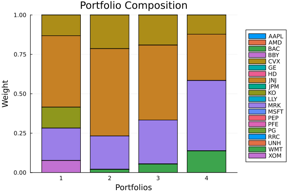
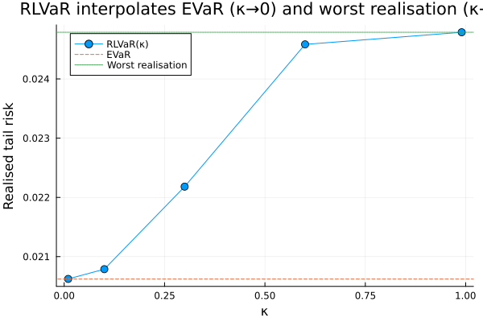
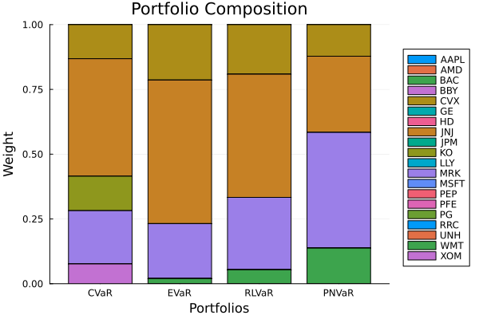

The source files can be found in examples/.
Exotic tail risk measures: beyond CVaR
ConditionalValueatRisk (CVaR) is the workhorse coherent tail measure — the expected loss in the worst $\alpha$ fraction of outcomes. But it averages over the tail, so two distributions with the same tail average but very different tail shapes look identical to it. The library ships a family of coherent tail measures that weight the extreme tail more aggressively than CVaR:
EntropicValueatRisk(EVaR) — the tightest coherent upper bound on Value-at-Risk, built from the exponential moment-generating function. It is more conservative than CVaR and is solved over the exponential cone.RelativisticValueatRisk(RLVaR) — a coherent generalisation of EVaR via the Kaniadakis ($\kappa$-deformed) entropy, parametrised by $\kappa \in (0, 1)$. It interpolates between EVaR (as $\kappa \to 0$) and the worst realisation (as $\kappa \to 1$), giving a continuous dial on how hard the extreme tail is penalised. Solved over the power cone.PowerNormValueatRisk(PNVaR) — generalises EVaR by replacing the moment-generating function with a power-norm, parametrised by a power $p \ge 1$. Also solved over the power cone, and likewise approaches the worst realisation as $p$ grows.GenericValueatRiskRange— composes any two of these measures into a two-sided range: one measure on the loss side, another on the gain side.
These measures sit in a conservativeness ladder, $\mathrm{CVaR} \le \mathrm{EVaR} \le \mathrm{RLVaR}$, and all share the confidence level $\alpha$ with CVaR.
Reach for these when CVaR does not punish the extreme tail enough — when you care about the worst few outcomes more than the average of the worst 5%, but want to stay coherent and convex rather than jumping to a raw worst-realisation objective. The $\kappa$ (RLVaR) and $p$ (PNVaR) parameters are the dial: turn them up to move continuously from EVaR-like behaviour toward worst-case behaviour.
EVaR needs the exponential cone; RLVaR and PNVaR need the power cone. Clarabel supports both, so unlike VarianceSkewKurtosis (which needs SCS for PSD cones) these need no special solver — the optimiser's Clarabel handles them directly. The measures also accept an slv field, which is only needed when you evaluate them standalone with expected_risk (as we do below), not when they are the objective of a MeanRisk.
using PortfolioOptimisers, PrettyTables, DataFrames, Statisticsresfmt = (v, i, j) -> begin if j == 1 return v else return isa(v, Number) ? "$(round(v * 100, digits = 3)) %" : v endend;1. Data and shared setup
using CSV, TimeSeries, ClarabelX = TimeArray(CSV.File(joinpath(@__DIR__, "..", "SP500.csv.gz")); timestamp = :Date)[(end - 252):end]rd = prices_to_returns(X)pr = prior(EmpiricalPrior(), rd)slv = [Solver(; name = :clarabel1, solver = Clarabel.Optimizer, settings = Dict("verbose" => false), check_sol = (; allow_local = true, allow_almost = true)), Solver(; name = :clarabel2, solver = Clarabel.Optimizer, settings = Dict("verbose" => false, "max_step_fraction" => 0.95), check_sol = (; allow_local = true, allow_almost = true)), Solver(; name = :clarabel3, solver = Clarabel.Optimizer, settings = Dict("verbose" => false, "max_step_fraction" => 0.9), check_sol = (; allow_local = true, allow_almost = true))]opt = JuMPOptimiser(; pe = pr, slv = slv)JuMPOptimiser
pe ┼ LowOrderPrior
│ X ┼ 252×20 Matrix{Float64}
│ o_X ┼ nothing
│ mu ┼ 20-element Vector{Float64}
│ sigma ┼ 20×20 Matrix{Float64}
│ chol ┼ nothing
│ w ┼ nothing
│ ens ┼ nothing
│ kld ┼ nothing
│ ow ┼ nothing
│ rr ┼ nothing
│ fpr ┼ nothing
│ Z ┴ nothing
slv ┼ 3-element Vector{Solver}
│ Solver ⋯
│ Solver ⋯
│ Solver ⋯
wb ┼ WeightBounds
│ lb ┼ Float64: 0.0
│ ub ┴ Float64: 1.0
bgt ┼ Float64: 1.0
sbgt ┼ nothing
gbgt ┼ nothing
xbgt ┼ Bool: false
lt ┼ nothing
st ┼ nothing
lcse ┼ nothing
cte ┼ nothing
gcarde ┼ nothing
sgcarde ┼ nothing
smtx ┼ nothing
sgmtx ┼ nothing
slt ┼ nothing
sst ┼ nothing
sglt ┼ nothing
sgst ┼ nothing
tn ┼ nothing
fees ┼ nothing
sets ┼ nothing
tr ┼ nothing
ple ┼ nothing
ret ┼ ArithmeticReturn
│ settings ┼ JuMPReturnsSettings
│ │ scale ┼ Float64: 1.0
│ │ lb ┼ nothing
│ │ rte ┼ Bool: true
│ │ fee ┼ Bool: true
│ │ mic ┴ Bool: true
│ ucs ┼ nothing
│ mu ┴ nothing
sca ┼ SumScalariser()
ccnt ┼ nothing
cobj ┼ nothing
sc ┼ Int64: 1
so ┼ Int64: 1
ss ┼ nothing
card ┼ nothing
scard ┼ nothing
l2c ┼ nothing
lpc ┼ nothing
linfc ┼ nothing
l1 ┼ nothing
l2 ┼ nothing
lp ┼ nothing
linf ┼ nothing
brt ┼ Bool: false
x_src ┼ Symbol: :prior
z_src ┼ Symbol: :data
strict ┴ Bool: false
2. Minimising each tail measure
Each measure drops into MeanRisk with no extra wiring; the optimiser's Clarabel solves the exponential/power cones. We use the default confidence level (alpha = 0.05), the default kappa = 0.3 for RLVaR, and the default p = 2.0 for PNVaR.
measures = ["CVaR" => ConditionalValueatRisk(), "EVaR" => EntropicValueatRisk(), "RLVaR" => RelativisticValueatRisk(), "PNVaR" => PowerNormValueatRisk()]results = [optimise(MeanRisk(; r = r, opt = opt)) for (_, r) in measures]names_r = first.(measures)pretty_table(DataFrame(hcat(rd.nx, [r.w for r in results]...), [:assets; Symbol.(names_r)...]); formatters = [resfmt])┌────────┬──────────┬──────────┬──────────┬──────────┐
│ assets │ CVaR │ EVaR │ RLVaR │ PNVaR │
│ Any │ Any │ Any │ Any │ Any │
├────────┼──────────┼──────────┼──────────┼──────────┤
│ AAPL │ 0.0 % │ 0.0 % │ 0.0 % │ 0.0 % │
│ AMD │ 0.0 % │ 0.0 % │ 0.0 % │ 0.0 % │
│ BAC │ 0.0 % │ 0.0 % │ 0.0 % │ 0.0 % │
│ BBY │ 0.0 % │ 0.0 % │ 0.0 % │ 0.0 % │
│ CVX │ 13.167 % │ 21.386 % │ 19.129 % │ 12.205 % │
│ GE │ 0.0 % │ 0.0 % │ 0.0 % │ 0.0 % │
│ HD │ 0.0 % │ 0.0 % │ 0.0 % │ 0.0 % │
│ JNJ │ 45.342 % │ 55.414 % │ 47.54 % │ 29.391 % │
│ JPM │ 0.0 % │ 0.0 % │ 0.0 % │ 0.0 % │
│ KO │ 13.285 % │ 0.0 % │ 0.0 % │ 0.0 % │
│ LLY │ 0.0 % │ 0.0 % │ 0.0 % │ 0.0 % │
│ MRK │ 20.556 % │ 21.207 % │ 27.934 % │ 44.659 % │
│ MSFT │ 0.0 % │ 0.0 % │ 0.0 % │ 0.0 % │
│ PEP │ 0.0 % │ 0.0 % │ 0.0 % │ 0.0 % │
│ PFE │ 0.0 % │ 0.0 % │ 0.0 % │ 0.0 % │
│ PG │ 0.0 % │ 0.0 % │ 0.0 % │ 0.0 % │
│ RRC │ 0.0 % │ 0.0 % │ 0.0 % │ 0.0 % │
│ UNH │ 0.0 % │ 0.0 % │ 0.0 % │ 0.0 % │
│ WMT │ 0.0 % │ 1.993 % │ 5.396 % │ 13.746 % │
│ XOM │ 7.65 % │ 0.0 % │ 0.0 % │ 0.0 % │
└────────┴──────────┴──────────┴──────────┴──────────┘The allocations differ: the more conservative measures (EVaR, RLVaR) push harder into the names that protect against the worst days, not just the worst-5%-on-average days, so they concentrate differently from CVaR.
using StatsPlots, GraphRecipesplot_stacked_bar_composition(results, rd)
3. How different is each measure from CVaR?
The sharp way to see that these are genuinely different objectives is to cross-evaluate: take each minimum-risk portfolio and measure its realised risk under every measure. The diagonal should be the smallest entry in its column (each portfolio is best at minimising its own measure), and within any row the values should climb CVaR → EVaR → RLVaR → PNVaR — the conservativeness ladder. We pass slv here because we are evaluating the measures standalone.
evals = ["CVaR" => ConditionalValueatRisk(), "EVaR" => EntropicValueatRisk(; slv = slv), "RLVaR" => RelativisticValueatRisk(; slv = slv), "PNVaR" => PowerNormValueatRisk(; slv = slv)]cross = DataFrame(; minimises = names_r)for (mname, m) in evals cross[!, Symbol(mname)] = [expected_risk(m, r.w, rd.X) for r in results]endpretty_table(cross; formatters = [resfmt])┌───────────┬─────────┬─────────┬─────────┬─────────┐
│ minimises │ CVaR │ EVaR │ RLVaR │ PNVaR │
│ String │ Float64 │ Float64 │ Float64 │ Float64 │
├───────────┼─────────┼─────────┼─────────┼─────────┤
│ CVaR │ 1.764 % │ 2.062 % │ 2.218 % │ 2.476 % │
│ EVaR │ 1.81 % │ 1.97 % │ 2.08 % │ 2.342 % │
│ RLVaR │ 1.826 % │ 1.977 % │ 2.074 % │ 2.308 % │
│ PNVaR │ 1.929 % │ 2.055 % │ 2.128 % │ 2.233 % │
└───────────┴─────────┴─────────┴─────────┴─────────┘Reading the table: each portfolio attains the lowest value of the measure it was built to minimise (the diagonal), confirming the four measures are not interchangeable. And every row increases left to right — for the same portfolio, EVaR is larger than CVaR and RLVaR larger still, because each measure puts more weight on the most extreme losses.
4. RLVaR as a dial: from EVaR to the worst realisation
The most useful intuition for RelativisticValueatRisk is that $\kappa$ slides it continuously between two familiar measures. We hold one portfolio fixed (the CVaR-minimising one) and evaluate RLVaR across $\kappa$, alongside EVaR and WorstRealisation as the two limits.
w_fixed = results[1].w ## CVaR-minimising portfoliokappas = [0.01, 0.1, 0.3, 0.6, 0.99]rlvar_curve = [expected_risk(RelativisticValueatRisk(; slv = slv, kappa = k), w_fixed, rd.X) for k in kappas]evar_ref = expected_risk(EntropicValueatRisk(; slv = slv), w_fixed, rd.X)wr_ref = expected_risk(WorstRealisation(), w_fixed, rd.X)pretty_table(DataFrame(; :kappa => kappas, :RLVaR => rlvar_curve); formatters = [resfmt])┌─────────┬─────────┐
│ kappa │ RLVaR │
│ Float64 │ Float64 │
├─────────┼─────────┤
│ 0.01 │ 2.062 % │
│ 0.1 │ 2.079 % │
│ 0.3 │ 2.218 % │
│ 0.6 │ 2.458 % │
│ 0.99 │ 2.479 % │
└─────────┴─────────┘As $\kappa \to 0$ the RLVaR matches EVaR, and as $\kappa \to 1$ it matches the worst realisation — the curve climbs monotonically between the two limits. That is the whole point of RLVaR: a single coherent measure that you can tune from "tight upper bound on VaR" all the way to "the single worst day", without ever leaving the convex world.
plot(kappas, rlvar_curve; seriestype = :path, marker = (:circle, 5), label = "RLVaR(κ)", xlabel = "κ", ylabel = "Realised tail risk", legend = :topleft, title = "RLVaR interpolates EVaR (κ→0) and worst realisation (κ→1)")hline!([evar_ref]; label = "EVaR", linestyle = :dash)hline!([wr_ref]; label = "Worst realisation", linestyle = :dot)
5. PowerNorm Value-at-Risk: the p dial
PowerNormValueatRisk plays a similar game through its power $p \ge 1$: larger p pushes the measure toward the worst realisation. We evaluate it on the same fixed portfolio.
ps = [2.0, 4.0, 10.0]pnvar_curve = [expected_risk(PowerNormValueatRisk(; slv = slv, p = p), w_fixed, rd.X) for p in ps]pretty_table(DataFrame(; :p => ps, :PNVaR => pnvar_curve); formatters = [resfmt])┌─────────┬─────────┐
│ p │ PNVaR │
│ Float64 │ Float64 │
├─────────┼─────────┤
│ 2.0 │ 2.476 % │
│ 4.0 │ 2.479 % │
│ 10.0 │ 2.479 % │
└─────────┴─────────┘PNVaR also climbs toward the worst realisation as p grows. We start the sweep at p = 2 deliberately: although the constructor permits p = 1, the power-cone formulation degenerates at that boundary and the solver stalls (see the findings note in the source).
6. Two-sided control with GenericValueatRiskRange
GenericValueatRiskRange composes any two XatRisk measures into a range: a loss-side measure on the returns plus a gain-side measure on the negated returns. This lets you treat downside and upside asymmetrically — for example, an aggressive EVaR on the loss side (punish bad tails hard) with a milder CVaR on the gain side. We compare it against the symmetric ConditionalValueatRiskRange.
r_asym = GenericValueatRiskRange(; loss = EntropicValueatRisk(), gain = ConditionalValueatRisk())res_asym = optimise(MeanRisk(; r = r_asym, opt = opt))res_sym = optimise(MeanRisk(; r = ConditionalValueatRiskRange(), opt = opt))pretty_table(DataFrame(; :assets => rd.nx, :EVaR_loss_CVaR_gain => res_asym.w, :CVaR_range => res_sym.w); formatters = [resfmt])┌────────┬─────────────────────┬────────────┐
│ assets │ EVaR_loss_CVaR_gain │ CVaR_range │
│ String │ Float64 │ Float64 │
├────────┼─────────────────────┼────────────┤
│ AAPL │ 0.0 % │ 0.0 % │
│ AMD │ 0.0 % │ 0.0 % │
│ BAC │ 0.0 % │ 0.0 % │
│ BBY │ 0.0 % │ 0.0 % │
│ CVX │ 0.0 % │ 10.966 % │
│ GE │ 0.065 % │ 0.0 % │
│ HD │ 0.0 % │ 0.0 % │
│ JNJ │ 45.358 % │ 45.582 % │
│ JPM │ 0.0 % │ 0.0 % │
│ KO │ 0.958 % │ 12.099 % │
│ LLY │ 0.0 % │ 0.0 % │
│ MRK │ 28.527 % │ 12.347 % │
│ MSFT │ 0.0 % │ 0.0 % │
│ PEP │ 0.0 % │ 0.0 % │
│ PFE │ 0.0 % │ 0.0 % │
│ PG │ 0.085 % │ 3.365 % │
│ RRC │ 4.442 % │ 1.242 % │
│ UNH │ 0.0 % │ 0.0 % │
│ WMT │ 10.941 % │ 14.399 % │
│ XOM │ 9.623 % │ 0.0 % │
└────────┴─────────────────────┴────────────┘The asymmetric range tilts the portfolio toward names whose downside tail is well behaved, while the symmetric CVaR range treats both sides with the same measure.
A final composition plot of the four single-sided measures from section 2 makes the family's differences concrete: each coherent tail measure produces a recognisably different allocation.
plot_stacked_bar_composition(results, rd; xticks = ([1, 2, 3, 4], names_r))
Summary
Beyond CVaR, the library offers a ladder of coherent tail measures that weight the extreme tail progressively harder:
EntropicValueatRiskis the tight coherent upper bound on VaR (exponential cone).RelativisticValueatRiskgeneralises EVaR and dials continuously from EVaR ($\kappa \to 0$) to the worst realisation ($\kappa \to 1$) via the power cone.PowerNormValueatRiskoffers the same kind of dial through $p \ge 1$.GenericValueatRiskRangecomposes any two of them into an asymmetric two-sided measure.
All are convex and solved by Clarabel's exponential/power cones — no special solver needed. Reach for them when the shape of the extreme tail matters and CVaR's tail-averaging is too blunt.
This page was generated using Literate.jl.